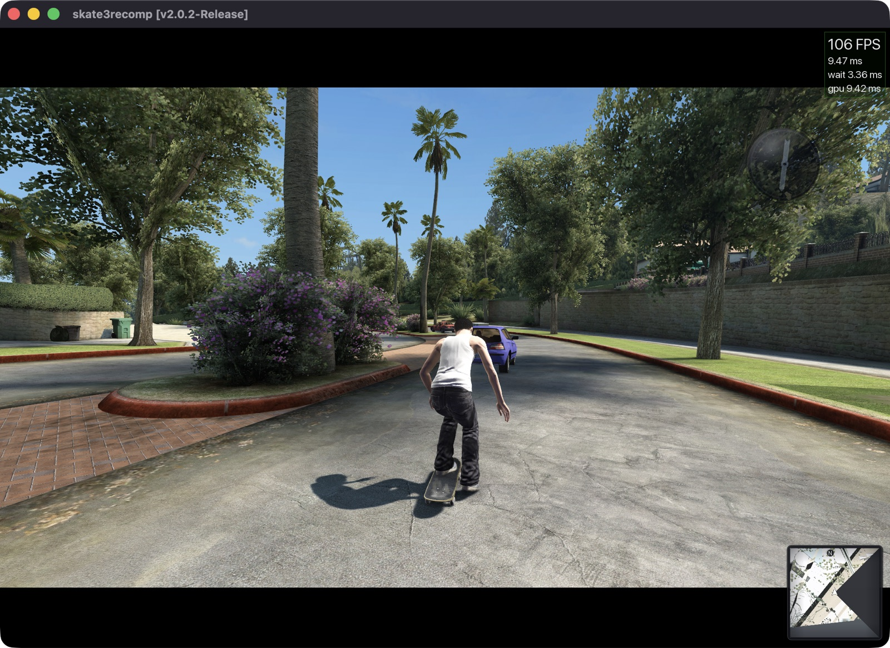
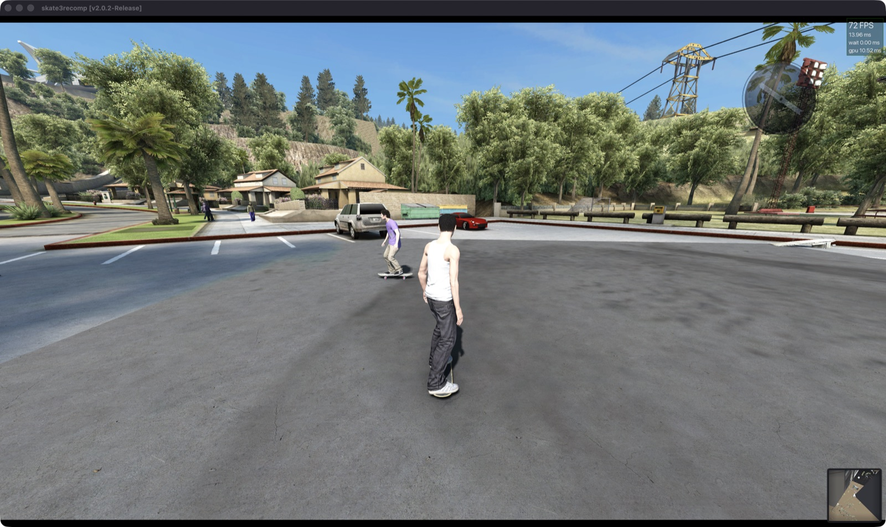

01Hardware
An Apple Silicon Mac (M1–M4). Native Metal renderer, windowed, mouse + keyboard or controller.
Static recompilation · Apple Silicon · macOS
Not an emulator. Skate 3 rebuilt as native arm64 code, rendering on Metal at 4K internal resolution — every effect on, 100+ FPS.
01 / Performance
The original render pipeline runs on a native Metal backend — dynamic shadows at 8192², SSAO, bloom, volumetric sun shafts and haze, lightmaps, decals and auto-exposure. No cut corners, no hidden presets.
02 / Screens


Captured in-game on an Apple Silicon Mac, windowed, FPS counter visible. Dense plaza scenes are CPU-bound; the open street holds 100+.
03 / Online
A small UDP relay and a documented wire protocol — built in public so players on separate machines can meet in one world. The netcode is open source. The game stays private.
github.com/uhrichsam4/skate3-online ↗04 / How it runs
An Apple Silicon Mac (M1–M4). Native Metal renderer, windowed, mouse + keyboard or controller.
Your own copy of Skate 3 (Xbox 360). No game data is hosted on this site — none ever will be.
Compiled and shared privately by the author. This page is the project home, not a download mirror.